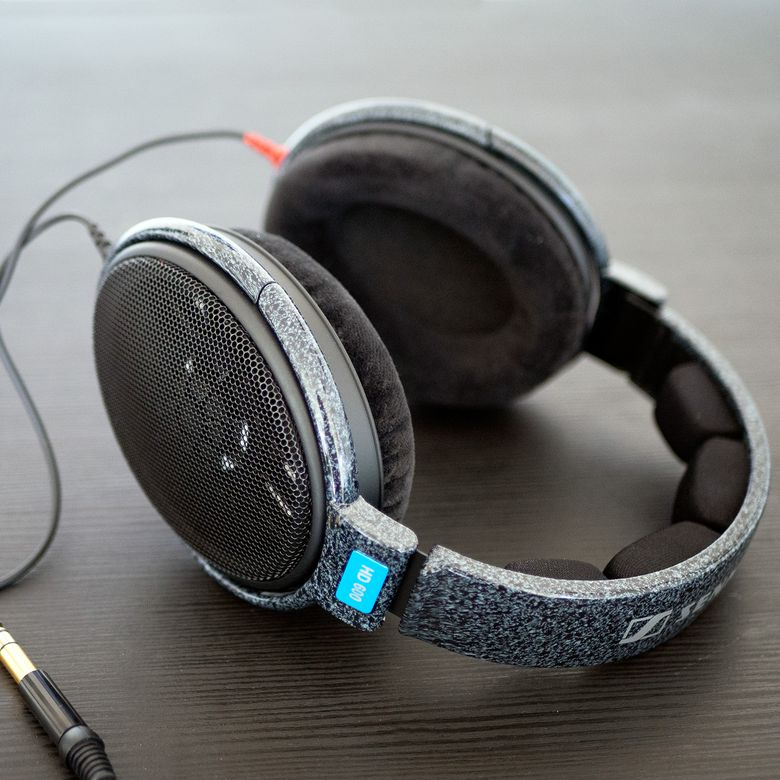

Oto kilka rzeczy, które lubię prezentować!
Sennheiser HD600

Produkcja rozpoczęła się w 1997 roku. Ten legendarny model nadal jest jednym z najlepszych słuchawek na rynku, z niezwykle neutralnym dźwiękiem i niesamowitą dokładnością!
Koszt:
1299.99zł
Pro-Ject Debut Recordmaster

Wykonany przez Pro-Ject, ten gramofon obraca rekordy przy wszystkich prędkościach 3 RPM i jest wyposażony w przyzwoitą kasetę. Stąd jego nazwa, jest w stanie digitalizować muzykę poprzez samodzielne odtwarzanie!
Koszt:
1799.99zł
Arrinera Hussarya

Produkowana przez polskiego producenta samochodów Hussarya to supersamochód, który oddaje hołd Winged Hussars od XVII wieku! Ma ponad 650 KM, może przejechać ponad 320 km / h, a silnik V8.
Koszt:
899999.99zł
Samsung Galaxy S10+

Wydany w 2019 roku, ten smartfon ma jeden z najlepiej wyglądających wyświetlaczy na rynku, z głośnymi i wyraźnymi głośnikami stereo oraz kamerą z opcją 2x. zoom i ma ultraszerokokątny obiektyw. Wyświetlacz ma 6,4 ", co czyni go doskonałym do oglądania filmów!
Koszt:
128GB - 3399.99zł
Gigabyte Geforce RTX 2070 Windforce 8G

Wysokiej klasy seria RTX2070-2080 Ti firmy Nvidia jest wyposażona w technologię RTX i charakteryzuje się wyjątkowo dobrą wydajnością. Dzięki 2304 rdzeniom CUDA i błyskawicznej pamięci GDDR6, ten procesor GPU nadaje się również do gier 4K!
Koszt:
2099.99zł
Clearscreen ICL 4000 rozpylacz

Dziwne, że to się tu pojawiło, ale słuchaj! Ten spray jest przeznaczony dla osób, które nigdy nie usuwają pyłu ze swoich monitorów, zakładając, że z jakiegoś powodu przebiegają po nim rękami i twarzą do niego. Tak czy inaczej uważam, że jest to niezwykle przydatne, nawet na telefony. Nazwij je!
Koszt:
39.99zł